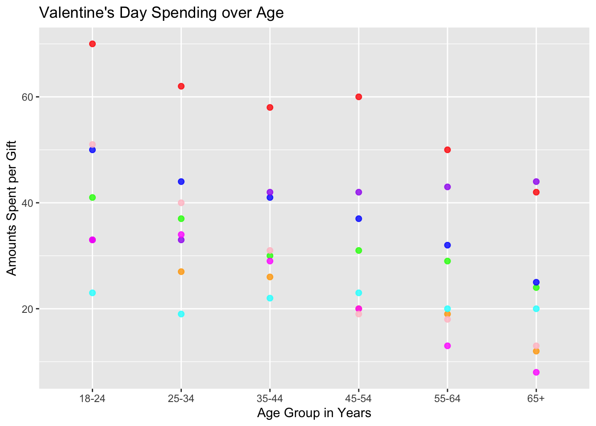
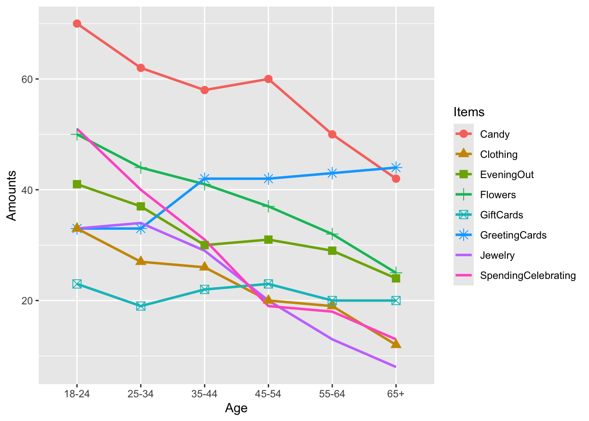

I’ve chosen the Valentines Day Spending Data Set for my first case study. Here below is the basic setup for the data.
library(tidyverse)
── Attaching core tidyverse packages ──────────────────────── tidyverse 2.0.0 ──
✔ dplyr 1.1.4 ✔ readr 2.1.5
✔ forcats 1.0.0 ✔ stringr 1.5.1
✔ ggplot2 3.5.1 ✔ tibble 3.2.1
✔ lubridate 1.9.3 ✔ tidyr 1.3.1
✔ purrr 1.0.2
── Conflicts ────────────────────────────────────────── tidyverse_conflicts() ──
✖ dplyr::filter() masks stats::filter()
✖ dplyr::lag() masks stats::lag()
ℹ Use the conflicted package (<http://conflicted.r-lib.org/>) to force all conflicts to become errors
library(mosaic)
Registered S3 method overwritten by 'mosaic':
method from
fortify.SpatialPolygonsDataFrame ggplot2
The 'mosaic' package masks several functions from core packages in order to add
additional features. The original behavior of these functions should not be affected by this.
Attaching package: 'mosaic'
The following object is masked from 'package:Matrix':
mean
The following objects are masked from 'package:dplyr':
count, do, tally
The following object is masked from 'package:purrr':
cross
The following object is masked from 'package:ggplot2':
stat
The following objects are masked from 'package:stats':
binom.test, cor, cor.test, cov, fivenum, IQR, median, prop.test,
quantile, sd, t.test, var
The following objects are masked from 'package:base':
max, mean, min, prod, range, sample, sum
library(skimr)
Attaching package: 'skimr'
The following object is masked from 'package:mosaic':
n_missing
Rows: 6 Columns: 9
── Column specification ────────────────────────────────────────────────────────
Delimiter: ","
chr (1): Age
dbl (8): SpendingCelebrating, Candy, Flowers, Jewelry, GreetingCards, Evenin...
ℹ Use `spec()` to retrieve the full column specification for this data.
ℹ Specify the column types or set `show_col_types = FALSE` to quiet this message.
age : This variable is divided by class of intervals of 7 inclusive.
Quantitative Data :
These are variables that contain the integer value of how much people in certain age groups spend on each of these variables.
Spending Celebrating
Candy
Flowers
Jewelry
Greeting Cards
Evening Out
Clothing
Gift Cards
Observations
After Inspecting the data I can already see that Candy has one of the highest means which means (ha ha pun intended) that generally people spend a lot on candy and the least on Gift Cards. This data could be useful for analyzing spending trends across different age groups.
Target Variable:
I think my target variable would be age and comparing different age groups and their choice of gift to spend on.
Predictor Variable:
My predictor variables would be all the Quantitative Data that I have because that determines how much which age groups spends on what.
How could have the experiment been conducted?
The likely experiment conducted here is a survey, with participants asked to report their spending habits across multiple categories. This data set could represent responses segmented by age group.
Research Hypothesis
The hypothesis could be that spending patterns across various categories change significantly based on age, with younger groups spending more on fun and social categories, while older groups might spend on traditional or sentimental items.
Potential Research Questions
Primary Question: How does total spending across all categories vary by age group?
Secondary Questions:
Which age groups prioritize spending on specific categories such as candy, jewelry, and flowers?
How does the allocation of spending change with age?
Which categories see the sharpest decline in spending as age increases?
How does spending on sentimental gifts (e.g., Greeting Cards, Flowers) compare to more materialistic gifts (e.g., Jewelry, GiftCards) across different age groups?
Do certain age groups exhibit similar spending patterns across all categories, indicating shared preferences, or are there significant deviations?
Business Question:
Which age groups should businesses target if they want to maximize sales of luxury items (e.g., Jewelry)?
With the stuff we learnt in class I could only get this close to the original graph as possible. I have no clue why gf_line wasn’t working when gf_point was :(.
gifts_age <- gifts_age %>%mutate(Age =factor(Age, levels =c("18-24", "25-34", "35-44", "45-54", "55-64", "65+")))gf_point(Candy ~ Age, data = gifts_age, color ="red", size =2, alpha =0.8) %>%gf_line(Candy ~ Age, color ="red", size =1) %>%gf_point(Clothing ~ Age, color ="orange", size =2, alpha =0.8) %>%gf_line(Clothing ~ Age, color ="orange", size =1) %>%gf_point(EveningOut ~ Age, color ="green", size =2, alpha =0.8) %>%gf_line(EveningOut ~ Age, color ="green", size =1) %>%gf_point(Flowers ~ Age, color ="blue", size =2, alpha =0.8) %>%gf_line(Flowers ~ Age, color ="blue", size =1) %>%gf_point(GiftCards ~ Age, color ="cyan", size =2, alpha =0.8) %>%gf_line(GiftCards ~ Age, color ="cyan", size =1) %>%gf_point(GreetingCards ~ Age, color ="purple", size =2, alpha =0.8) %>%gf_line(GreetingCards ~ Age, color ="purple", size =1) %>%gf_point(Jewelry ~ Age, color ="magenta", size =2, alpha =0.8) %>%gf_line(Jewelry ~ Age, color ="magenta", size =1) %>%gf_point(SpendingCelebrating ~ Age, color ="pink", size =2, alpha =0.8) %>%gf_line(SpendingCelebrating ~ Age, color ="pink", size =1) %>%gf_labs(title ="Valentine's Day Spending over Age",x ="Age Group in Years",y ="Amounts Spent per Gift" )
Warning: Using `size` aesthetic for lines was deprecated in ggplot2 3.4.0.
ℹ Please use `linewidth` instead.
`geom_line()`: Each group consists of only one observation.
ℹ Do you need to adjust the group aesthetic?
`geom_line()`: Each group consists of only one observation.
ℹ Do you need to adjust the group aesthetic?
`geom_line()`: Each group consists of only one observation.
ℹ Do you need to adjust the group aesthetic?
`geom_line()`: Each group consists of only one observation.
ℹ Do you need to adjust the group aesthetic?
`geom_line()`: Each group consists of only one observation.
ℹ Do you need to adjust the group aesthetic?
`geom_line()`: Each group consists of only one observation.
ℹ Do you need to adjust the group aesthetic?
`geom_line()`: Each group consists of only one observation.
ℹ Do you need to adjust the group aesthetic?
`geom_line()`: Each group consists of only one observation.
ℹ Do you need to adjust the group aesthetic?

I then saw that error and it said something called geom_line and with the help of the big chat gpt, I researched about it and asked about all the steps to create the graph and geom_line’s syntax and i got to making this graph.
Warning: The shape palette can deal with a maximum of 6 discrete values because more
than 6 becomes difficult to discriminate
ℹ you have requested 8 values. Consider specifying shapes manually if you need
that many have them.
Warning: Removed 12 rows containing missing values or values outside the scale range
(`geom_point()`).

labs(title ="Valentine's Day Spending over Age",x ="Age Group in Years",y ="Amounts Spent per Gift",caption ="Tidy Tuesday 13-Feb-2024" ) +theme(axis.text.x =element_text(size =12), axis.text.y =element_text(size =12), plot.title =element_text(size =18, face ="bold"), legend.title =element_text(size =14), legend.text =element_text(size =12) ) +guides(shape =guide_legend(override.aes =list(size =5)))
NULL
something else i tried to do without using geom line.
Candy: Spending on candy remains the highest across all age groups, although it declines steadily from the 18-24 age group (over $60) to the 65+ group (around $50).
Evening Out: Expenditure on evenings out sees a significant drop as age increases, with younger people (18-24) spending more on this activity compared to older age groups.
Jewelry: Spending on jewelry peaks for younger age groups but gradually declines with age, especially after 35-44, indicating that younger generations tend to invest more in jewelry for Valentine’s Day.
Gift Cards and Greeting Cards: These categories show a more stable trend across all age groups, with minimal fluctuations. The spending remains relatively lower than other categories like Candy or Jewelry.
Spending Celebrating: The general spending for celebrations shows a decline after the age of 35-44, suggesting that younger individuals (under 35) are more likely to spend on celebrations compared to older adults.
Flowers: Spending on flowers remains relatively stable across all age groups, with a slight decline after 55-64 years, though it stays close to the middle of the range across all age groups.
Valentine’s Day spending habits evolve significantly across age groups, with younger individuals (18-34) generally spending more on experiences (like evenings out) and luxury items such as candy and jewelry. As people grow older, the focus shifts towards more affordable or symbolic gifts like greeting cards and gift cards, with lower overall spending on celebrations.
My Story
I actually had quite a fun time trying to figure out different research questions and the basic idea of working back. the part that I didn’t like was trying to figure out the code for the graph itself as some parts weren’t working and I couldn’t understand why. Especially gf_line on its own. I surprisingly learnt a lot about the function called pivot_longer which essentially from my understanding creates a variable by bunching up variables together to make another variable with levels. I also learnt quite a bit about geom_line and its much more convenient to write than using gf_line and gf_point.